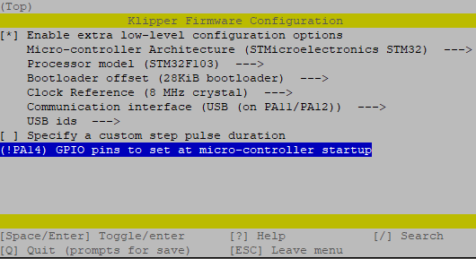
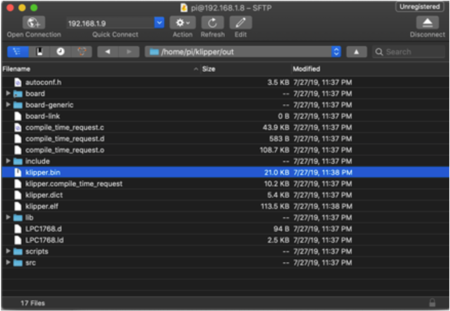

sudo apt install make
cd ~/klipper
make menuconfig
In the menu structure there are a number of items to be selected.

Once the configuration is selected, select “Exit” and “Yes” if asked to save the configuration.
Run the following:
make clean
make
The make command, when completed, creates a firmware file klipper.bin that is store in the folder /home/pi/klipper/out. This file need to be copied to the Mini E3 board. The easiest way to do this is to use a GUI like WinSCP on Windows or either Cyberduck or scp (from terminal) on Mac to copy the file to your computer.

Copy the klipper.bin to the desktop, then rename it to firmware.bin
Important: If the file is not renamed, the bootloader will not be updated properly.
Ensure that the Mini E3 board is not powered, then remove the microSD card that is installed.
Connect the microSD card to the computer with the firmware.bin file. Open the microSC card in the file browser. There will be a file named ‘firmware.cur’, that file can be deleted or left alone, it will be overwritten later.
Copy the firmware.bin from the desktop onto the microSD card. If problems are encountered transferring the file(s) to the microSD card, reformat the microSD card with a FAT32 filesystem and try again.
Replace the microSD card into the Mini E3.
Turn on the power supply to power on the Mini E3 board. If named properly, the SKR will automatically update with the Klipper firmware.
Important: If the Mini E3 is not powered with 12-24V, Klipper will be unable to communicate with the TMC drivers via UART and the Mini E3 will automatically shut down.